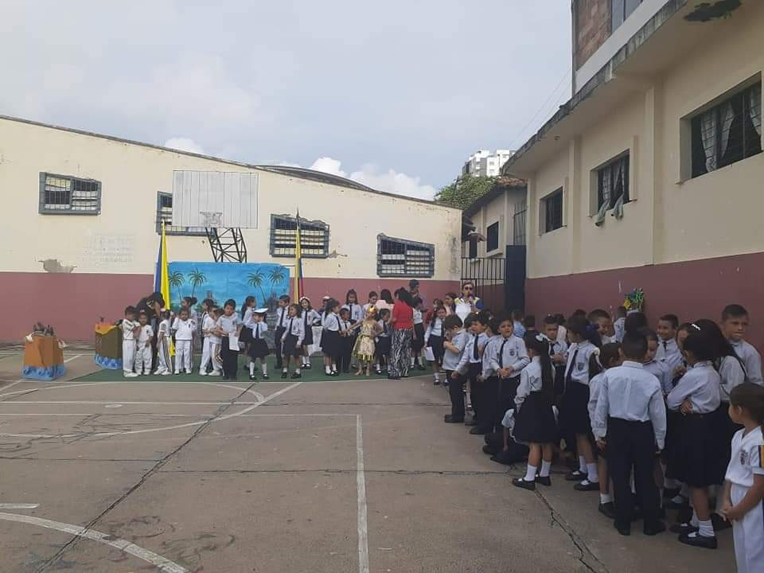
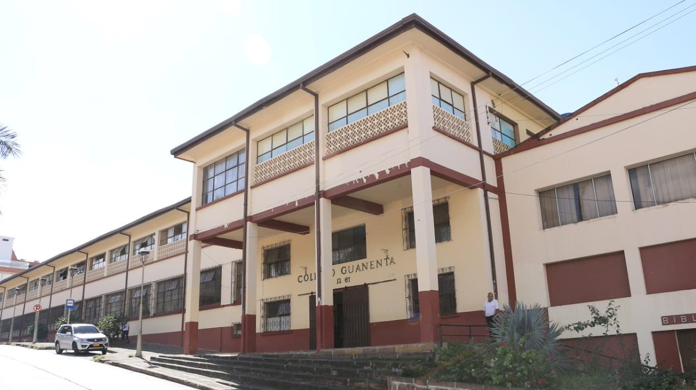

Sede C (PRIMARIA)
En esta sede aprendí muchas cosas, me siento muy feliz y afortunada de haber cursado mi primaria allí. Las profesoras con su actitud y metodología convierten el estudio en algo muy interactivo y fácil de aprender. Mi primera profe fue mi mamá, la cual me cultivó la disciplina que me caracteriza, y me enseño tanto a ganar, como a perder. Durante mi primaria ocupé el 1° lugar todos los años.
Sede A(SECUNDARIA)
Ya pasando a la sede principal, fue un cambio bastante drástico, pero muy bueno a la vez, aquí conoce a personas nuevas que pronto se convertirían en mis amigos, a su vez, me puse a prueba ante nuevos profesores y una nueva rutina, poco a poco me fui familiarizando más, y ya me encuentro cursando el grado 11, con compañeros que aprecio mucho y aprendizajes para toda mi vida.
